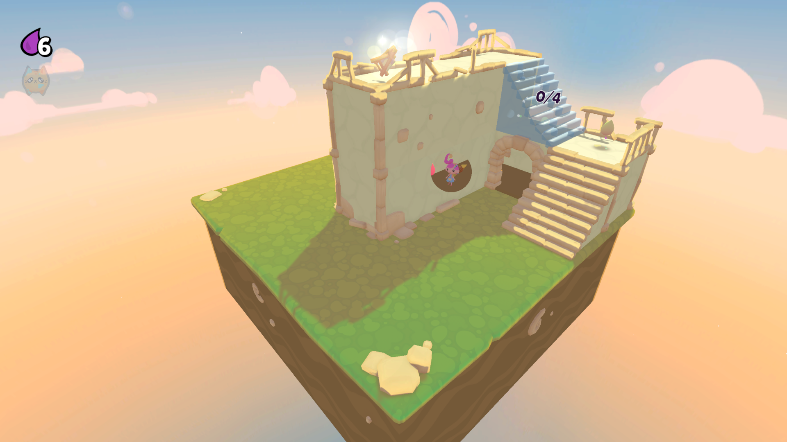
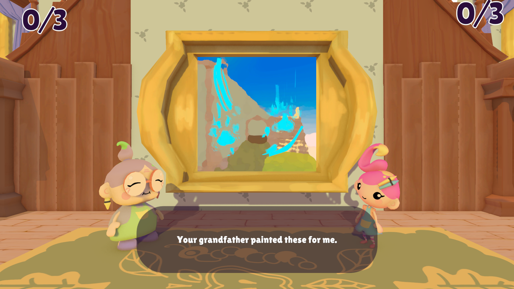

Between the Canvases - Jamaggedon 2026
Between the Canvases is a calm, heartfelt game created for Jamaggedon 2026. The project follows a young girl visiting her grandmother's house, where a magical paintbrush lets her step inside damaged paintings, recover their missing pieces, and preserve the family memories hidden within them.
I joined the project as the Technical Artist, bridging art and implementation so the game's cozy painting-travel fantasy could feel readable, responsive, and polished inside Unity. My work focused on building the shaders and VFX that support the experience, from revealing the player behind walls to mist, painting transitions, interactable feedback, and the final hand-painted look of the world.
Trailer
Images


Technical Art Focus
Player Reveal Shader
Created a shader that keeps the player visible through walls so navigation stays readable without breaking the scene composition.
Mist and Painting Effects
Built shaders for mist, entering paintings, and the painted surface look that give each world transition a soft, magical feel.
VFX and Interactable Feedback
Added supporting VFX and a dissolve effect for interactables to make player feedback clearer and the presentation feel more alive.
Project Links
You can download the released Windows build from the itch.io page, and the project repository is available at aemc64/UditJamLady.
The Development Team
- Manuel Martín - Design
- Andrés Mayo - Programming
- Marta Crespo - Programming
- Carmen Pelluz - Art
- Yudie Zhan - Art
- Marta Sánchez - Art
- Daniel Pascual - Technical Artist